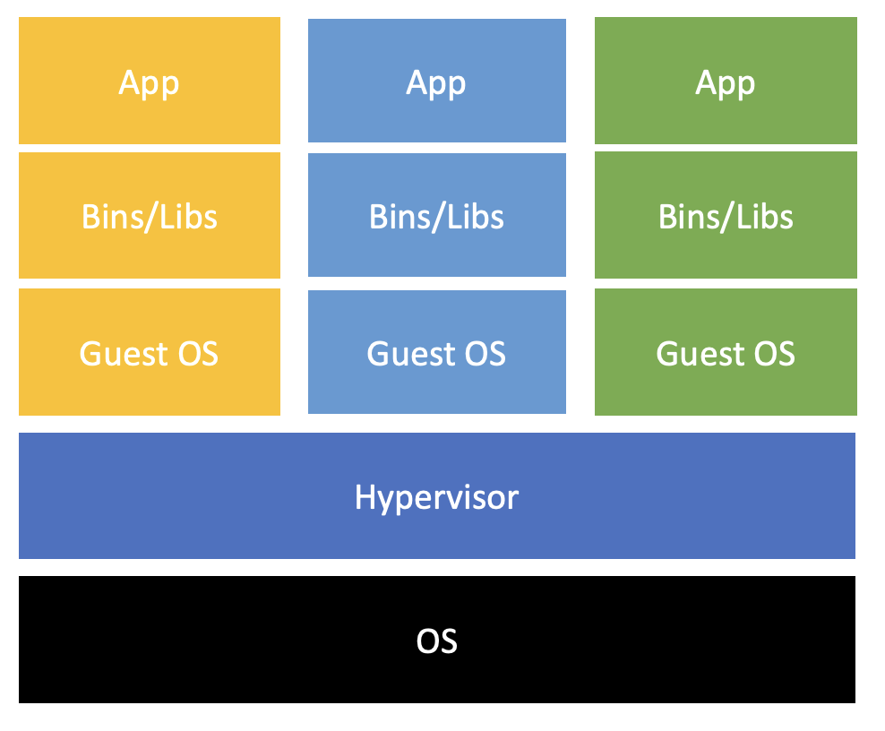
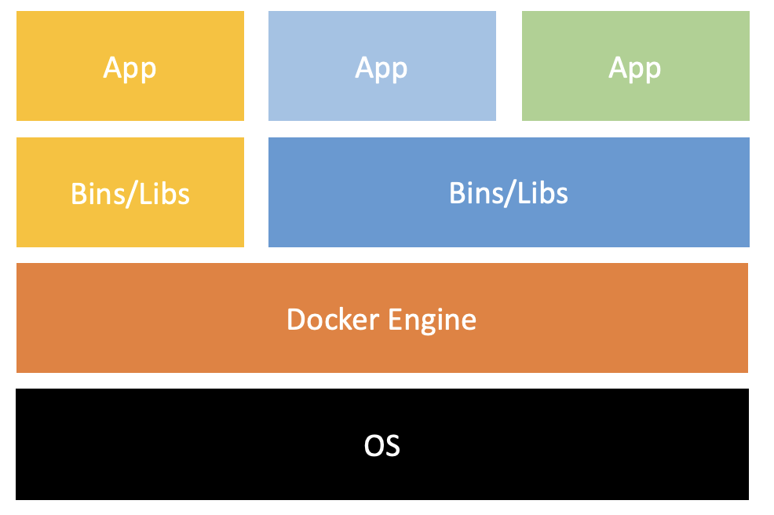

Docker
Container란
Containers are a lightweight and portable storage for an application and its dependencies.
- 컨테이너의 특성
- 호스트 OS자원을 사용하여 자원을 좀 더 효율적으로 사용 가능하다.
- 운영환경의 변경을 쉽게 할 수 있다; 이식성 (portability) 제공.
- 가볍다. (1번의 이유로 많은 수의 container들을 사용 가능)
- 최종 사용자와 개발자가 클라우드에도 배포할 수 있다. 2번과 비슷하게 환경까지 다 포함시켜서 보낼 수 있다는 뜻 (?)
외부 환경을 완벽하게 Emulate 하려는 VM과 달리 특히 container는
이식성과독립성에 목적을 둔다.
Container를 설명하는데 이 그림이 빠질 수 없다.


- VM는 syscall들을 interpreting 하고 OS와 hardware에 대한 접근을 제어한다. 또한 각각의 VM이 OS 전체와 library 모두를 가지고 있어야 한다. 하지만 container는 항상 호스트와 같은 커널에서 실행된다(컨테이너 내부의 process가 호스트의 프로세스들과 동일하다).
Container의 역사
- UNIX 에서는 chroot 명령어를 통해 독립도니 파일 시스템을 제공하였다. FreeBSD에서 jail 유틸리티를 제공하였고 2001년에 Solaris에서 자사에서만 사용 가능한 컨테이너화 기술을 개발하였다. Parrallels Inc. 에서는 Virtuozzo 컨테이너 기술을 발표하였고 이후에 2005년에 OpenVZ라는 이름으로 오픈소스화 하였다. 이후에 구글이 Linux Kernel을 위한 CGroups의 개발을 시작함과 동시에 구글의 인프라를 컨테이너로 옮기는 작업을 시작하였다. 이후에 LXC(Linux Container) 프로젝트는 2008년에 완벽한 컨테이너화 솔루션을 제공하였고 2013년에 Docker가 Contianerizing의 마지막 조각을 맞추면서 주류기술로 떠올랐다.
Container 이름의 유래
- 선착장에서 선적할때 물건의 규격이 달라 선적하기 어려워서 만들어 진것이 컨테이너. 예를 들어 이사를 하기 위해 우리는 짐을 어디다가 짐을 넣는가? 바로 박스, 즉 컨테이너에 넣는다. 그러는 이유는 다양한 크기와 특성을 가진 물품들을 추상화 할 수 있기 때문인데 이로 인해 배송에 overhead를 줄일 수가 있다. 이와 같은 특성을 IT로 옮긴 기술이 docker이다.
유용한 Commands
docker run -it {imageName:versionId}docker insepct {imageName}# use it with grep to get important informationdocker logs {imageName}docker ps -a
Docker Image creating
모든 이미지는 FROM 으로 어떠한 base image를 참조하는지 명시하여야 한다.
UFS(Union File System) 혹은 유니온 마운트
여러 파일시스템들을 겹처서(?) 사용할 수 있도록 해준다고 한다. 정확히 어떻게 작동하는 지는 잘 모르겠다.
도커 이미지는 여러 계층(layers)로 구성되어 있다. 그 계충은 Dockerfile 에서의 명령마다 생성이 되며 이전 계층 위에 생성이 된다. 그렇기 때문에 하나의 RUN 명령안에 여러개의 UNIX COMMANDS 들을 작성하는 것이 좋다.
Image Namespace
Docker Image들은 3가지의 namespace를 가질 수 있다.
1. 첫번째는 {userId}:{imageName} 이루어진 user namespace이다.
2. 두번째는 접두어나 :가 없는 root namespace 이다. 도커 사에 의해 관리되고 공식적인 이미지를 위해 예약되어 있다. 통상적으로 소프트웨어를 제작하는 제작사에 의해서 관리된다. (ex: nginx, debian)
3. 세번째는 Host 이름이나 IP가 접두어로 사용되는 이름이다. 써드 파티 레지스트리 등에서 찾을 수 있는 image들을 말한다.(ex: localhost:5000/wordpress)